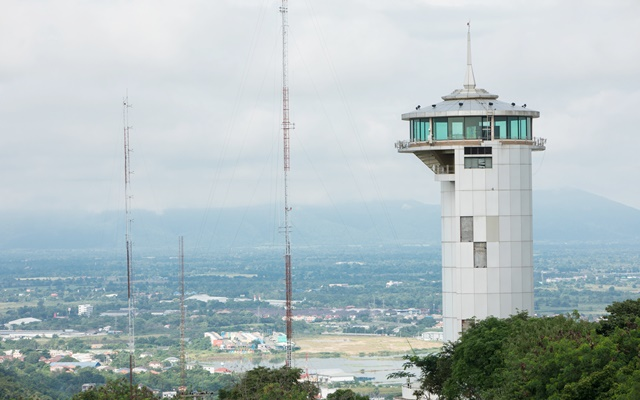

นครสวรรค์เป็นจังหวัดที่ตั้งอยู่ในภาคกลางของประเทศไทย มีชื่อเสียงในด้านธรรมชาติที่งดงามและสถานที่ท่องเที่ยวทางประวัติศาสตร์มากมาย...
วัดพระบรมธาตุเป็นสถานที่ศักดิ์สิทธิ์ของจังหวัดนครสวรรค์และเป็นจุดเด่นที่มีความสำคัญทางประวัติศาสตร์...
เขาสมอปูนเป็นจุดชมวิวที่สูงที่สุดในจังหวัดนครสวรรค์ ท่านจะได้เห็นทิวทัศน์ที่สวยงามของเมืองและป่าเขา...
บึงบอระเพชรเป็นแหล่งน้ำขนาดใหญ่ที่ตั้งอยู่ในอำเภอเมืองนครสวรรค์ เป็นแหล่งท่องเที่ยวทางธรรมชาติที่นักท่องเที่ยวสามารถมาเดินเล่น, พายเรือ, หรือชื่นชมทิวทัศน์รอบๆ ได้อย่างเพลิดเพลิน...
อุทยานแห่งชาติแม่วงก์เป็นแหล่งท่องเที่ยวธรรมชาติที่เหมาะสำหรับการเดินป่าและดูสัตว์ป่า...
หากท่านต้องการข้อมูลเพิ่มเติมเกี่ยวกับการท่องเที่ยวในนครสวรรค์ สามารถติดต่อเราได้ที่...